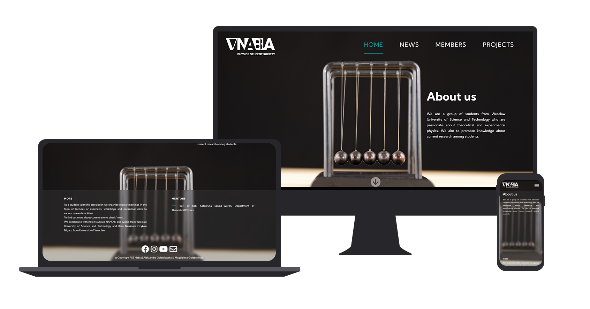
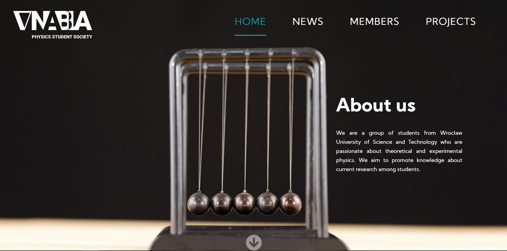
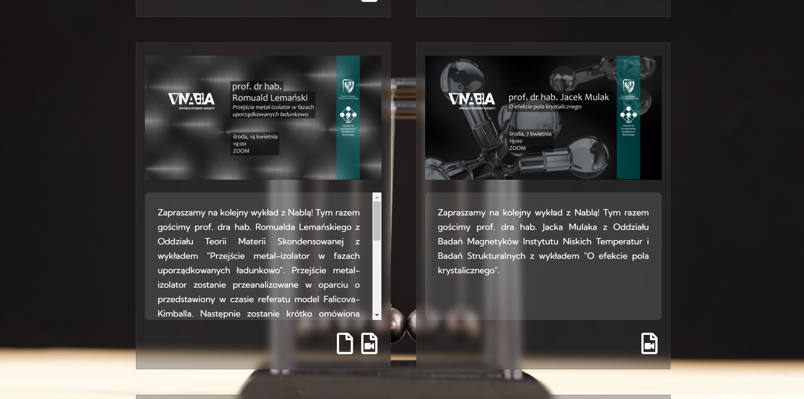
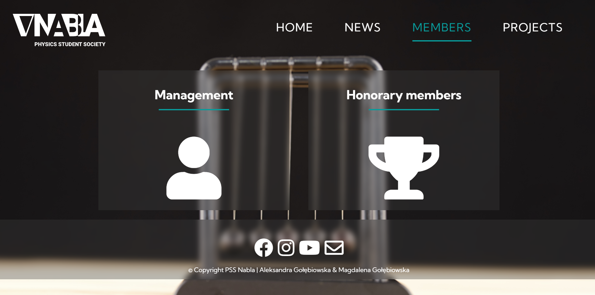
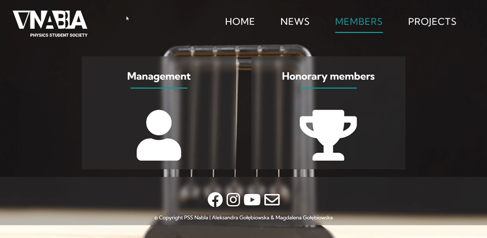
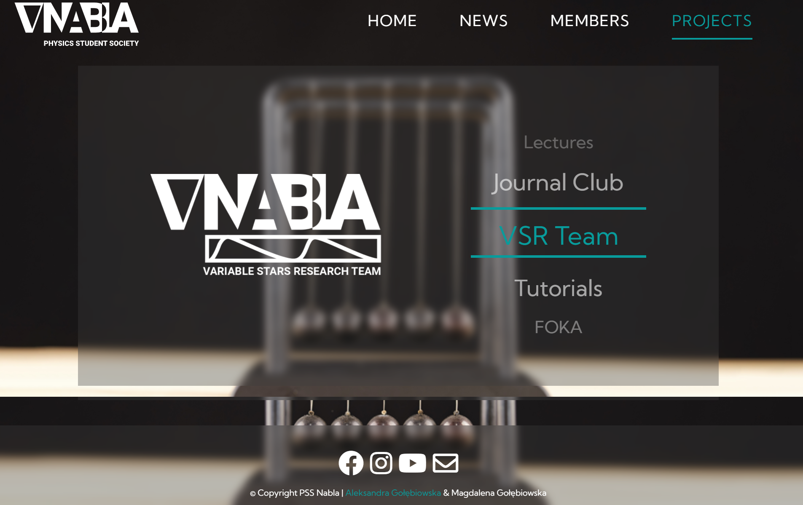

Physics Student Society Nabla new website
/ Web Design & Development/
Physics Student Society Nabla is a student association at Wrocław University of Science and Technology. The old website was outdated both in design as well as including information. As a member of the society's management I made sure to create a website that would stand out among other student societies!





